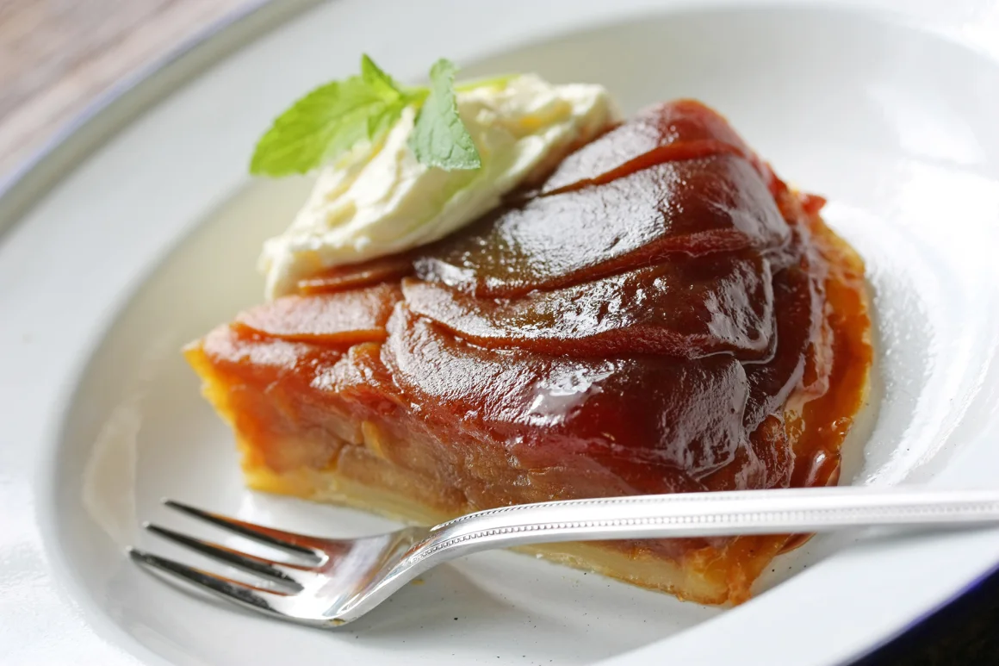

Tarte Tatin

Description
Tarte tatin is a classic French dessert that just uses just pastry dough,
butter, apples, and sugar to create magic! You can use puff pastry if you
prefer. No matter how yours comes out, you'll enjoy it!
This tarte Tatin is impressive enough for company, but it’s easy to make
with just a few simple ingredients.
Ingredients
- 3 tablespoons butter
- ¾ cup white sugar
- 3 large Granny Smith apples - peeled, cored, and quartered
- 1 tablespoon all-purpose flour
- 1 (9-inch) unbaked pie crust
Steps
- Preheat the oven to 425 degrees F (220 degrees C).
-
Coat a 10-inch oven-proof skillet with butter. Sprinkle sugar evenly
over the top of the butter.
-
Place apple quarters, rounded sides down, on top of the butter and sugar
in a circular pattern.
-
Place skillet over medium-high heat and cook until butter melts and
sugar dissolves and begins to caramelize. Continue to cook until apples
soften and caramel begins to brown, 10 to 12 minutes. Remove from heat.
-
Sprinkle work surface with flour and roll pie dough into an 11-inch
circle. Pinch edge to create a ruffle around crust.
- Place crust on top of apples and tuck in edges around apples.
-
Bake in the preheated oven until crust is golden brown, about 20
minutes. Allow to cool for 5 minutes. Place a plate over the top of the
pan and carefully invert to release tarte from the pan. Scrape any
remaining apples stuck to the pan back on top of crust.
*Store the cooled apple tarte Tatin in an airtight container in the
refrigerator for up to three days. Reheat in the oven.
Bonne appetite!